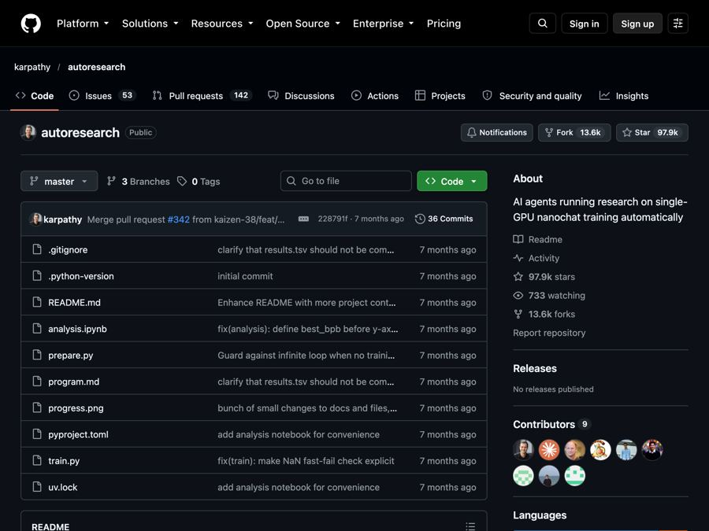

autoresearch: Karpathy's AI that runs experiments while you sleep
Andrej Karpathy's small experiment where an AI agent tweaks, trains and tests a tiny AI model overnight, keeping only what works.

The problem it solves
Training AI models is slow, patient work. A researcher changes one setting, starts a training run, waits, checks the score, and decides what to try next. Then they do it again. And again. Most of the day goes to waiting and small tweaks.
What if an AI could do that loop for you? You set it up at night, go to bed, and wake up to a log of experiments and, with luck, a better model.
What it is
autoresearch is a small, free project by Andrej Karpathy, a well-known AI researcher. It gives an AI agent a real but tiny setup for training a language model (the kind of AI behind chatbots). Then the agent runs its own experiments.
Here is the loop. The agent changes the code. It trains the model for exactly 5 minutes. It checks if the result got better. If yes, it keeps the change. If no, it throws it away. Then it repeats.
Because each run is 5 minutes, you get about 12 experiments an hour, or about 100 while you sleep, according to the README.
The fun twist: you do not edit the AI code yourself. You edit a plain-text instruction file called program.md. That file tells the agent how to behave, like a job description for a tiny research team.
Who it's for
- AI students and learners who want to see how model training really works.
- Machine learning researchers curious about letting agents run experiments.
- Tinkerers with a strong graphics card who like hands-on projects.
- People who follow AI news and want to try a much-talked-about idea themselves.
To be clear, this is a hands-on research toy, not an app for everyday tasks.
What you can do with it
- Let an AI run experiments for you. It edits, trains, scores and keeps or drops changes on its own.
- Use any coding agent. The README says you can use Claude, Codex, "or whatever you want."
- Compare fairly. Every run gets the same 5 minutes, so results are easy to compare.
- Track one clear score. It measures "val_bpb." Lower is better.
- Read the whole thing. Only three files really matter:
prepare.py(one-time setup),train.py(the file the agent changes), andprogram.md(the instructions you write). - Experiment with the instructions. Improving
program.mdis part of the game, since better instructions may mean faster progress.
How to start, step by step
What you need first: a computer with a single NVIDIA graphics card (the README says it was tested on an H100, a powerful data-center card), Python 3.10 or newer, and uv (a free Python project tool). You also need an AI coding agent, like Claude Code or Codex.
- Get the code. Download or clone the project from GitHub, then open Terminal in its folder.
- Install uv if you do not have it:
curl -LsSf https://astral.sh/uv/install.sh | sh
- Set up and test it:
uv sync
uv run prepare.py
uv run train.py
The prepare step downloads training data and takes about 2 minutes. The train step is one 5-minute test run.
- Start the agent. Open your coding agent in the project folder and type something like: "Hi have a look at program.md and let's kick off a new experiment! let's do the setup first."
Good to know
- Hardware is the big hurdle. The main version needs one NVIDIA graphics card. It does not run on a normal laptop as is.
- Mac, Windows and AMD forks exist. The README lists community versions: two for Mac, one for Windows with NVIDIA RTX cards, and one for AMD. These are made by other people.
- Smaller computers need tuning. The README gives tips, like using a simpler story dataset and making the model smaller.
- Results vary by computer. Since every run is 5 minutes, a faster card does more per run. Your scores will not match other people's.
- The agent runs on its own. The README suggests turning off its permission prompts so it can work overnight. Do that only on a machine you are comfortable letting it change.
- AI agent costs. autoresearch is free, but your coding agent may have its own fees.
- License: MIT. Free to use, change and even use in business. Just keep the copyright notice.
The bottom line
autoresearch is a peek at a future where AI helps do AI research. It is small, readable and free, but it needs serious graphics hardware. If you have it, it is a fascinating overnight project.
Get it: github.com/karpathy/autoresearch
📲 Watch the 30-second video on Instagram
Keep reading

DBX: one small free app to open and edit 100+ kinds of databases
DBX is a free, tiny app that lets you browse, search and edit over 100 kinds of databases, with an AI helper that writes queries for you.

PureMac: free up space on your Mac without a subscription
PureMac is a free, open-source Mac cleaner that removes junk, fully uninstalls apps, and never tracks you or tries to scare you.

Strata: run a big, private AI chatbot on your own gaming PC
A free one-click installer that runs a large Qwen AI model on a normal gaming PC, so your chats never leave your computer.